1. 시작하기
앱을 열면 이름 칸이 있습니다. 처음 켜면 칸이 비어 있고 "이름을 입력하세요 (애칭, 별명 등)"과 함께 커서가 그 칸에 있으니(폰은 키보드가 뜸) 바로 넣으세요. 한 번 넣은 이름은 다음에도 그대로 나옵니다.
| 혼자 하기 | 봇과 바로 한 판. 인원(2인 맞고 · 3인 · 4·5인)을 고르고 입장. 봇은 봇+AI봇 혼합(기본)·봇(보통)·AI봇(뛰어남) 중에서 설정에서 고릅니다. |
|---|---|
| 방 만들기 | 내가 방장이 되어 친구를 부릅니다. 인원·방 이름·방 키를 정하고 방을 엽니다. |
| 참가하기 | 친구가 만든 방에 들어갑니다. QR 찍기, 붙여넣기, 참가 코드, 같은 와이파이의 방 목록 중 편한 것으로. |
| 성적 보기 | 1일 · 1주 · 1개월 · 3개월 · 누적 성적과 이번 달·분기 상금 랭킹. |
| AI 학습하기 | 내 기록으로 나를 닮은 AI·더 강한 AI를 만듭니다 (AI). |
| 소개 보기 | 네이버에서 "어디나 고스톱"을 검색한 화면을 브라우저로 엽니다 (소개 글·사용 후기). |
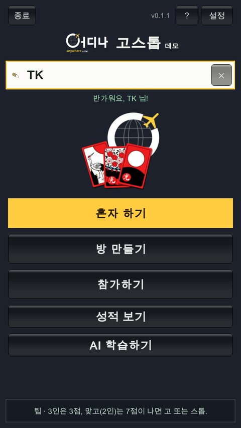
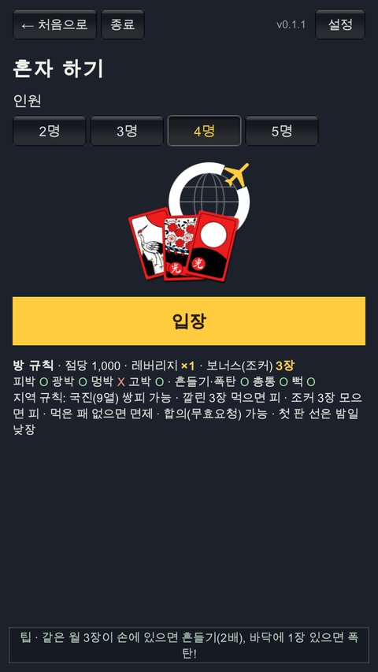
PC에서도: Windows PC판을 PC판 받기에서 내려받아 압축을 풀고 OdinaGoStop.exe를 실행하세요. 폰과 같은 방에서 함께 칠 수 있습니다.
2. 초대·참가
- 같은 와이파이·핫스팟: 인터넷 없이도 됩니다 (비행기에서 핫스팟으로 하기). 방장이 방을 열면 같은 와이파이 친구의 참가하기 화면에 방이 뜹니다. 방 키를 넣고 입장하거나 방장 화면의 QR을 찍으세요.
- 멀리 있는 친구: 방장 대기실의 카톡 초대로 링크를 보내면, 받은 친구는 링크만 누르면 같은 방에 들어옵니다.
- 인터넷 방 목록: 방장이 방 만들기에서 인터넷 목록: 보이기(기본)를 두면, 멀리 있는 사람의 참가하기 화면에도 그 방이 [인터넷]으로 뜹니다 (같은 와이파이 방은 [와이파이]). 방을 누르면 참가 코드 칸에 코드와 방 이름이 나오고 바로 방 키를 넣으면 됩니다. 방 키를 아는 사람만 들어올 수 있고, 방 키를 5번 틀리면 그 기기는 5분 동안 막힙니다. 훌라 방은 훌라에서만, 고스톱 방은 고스톱에서만 보입니다.
- 사람이 모자라면: 방장이 빈자리 AI봇으로 채우고 시작을 누르면 AI봇이 빈자리를 채웁니다. 늦게 온 친구는 봇 자리를 구경하다 그 판이 끝나면 이어받습니다.
- 게임 중에 나갔다 돌아오면 내 자리를 다시 이어받습니다. 그 사이 내 자리는 AI봇이 둡니다.
비행기에서 (인터넷 없이) 핫스팟으로 하기
비행기·기차·캠핑장처럼 인터넷이 없는 곳에서도 됩니다. 방장 폰의 핫스팟이 공유기 역할을 하고, 친구들은 그 핫스팟에 와이파이로 붙습니다. 게임은 폰끼리만 주고받으므로 모바일 데이터를 쓰지 않습니다. 앱은 미리 설치해 두세요 (비행기에서는 내려받을 수 없습니다).
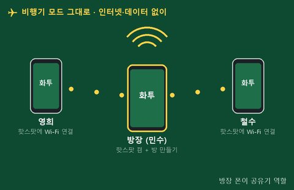
① 방장: 비행기 모드 + 핫스팟 켜기
- 폰 설정 → 연결에서 비행기 탑승 모드를 켭니다.
- 같은 화면의 모바일 핫스팟 및 테더링 → 모바일 핫스팟을 켭니다 (삼성 기준, 다른 폰은 "핫스팟" "테더링"으로 찾으세요).
- 모바일 핫스팟 글자를 눌러 핫스팟 이름과 비밀번호를 확인하고 친구들에게 알려 줍니다.
기종에 따라 비행기 모드에서 핫스팟이 회색으로 꺼져 있으면, 비행기 모드를 켠 뒤 Wi-Fi를 한 번 켰다 끄고 다시 시도해 보세요. 그래도 안 되면 그 폰은 방장을 못 하니, 다른 사람 폰으로 방장을 바꿔 보세요.
② 친구들: 방장 핫스팟에 와이파이 연결
- 비행기 탑승 모드는 켠 채로 Wi-Fi만 켭니다.
- 목록에서 방장 핫스팟 이름(예: "민수의 폰")을 누르고 비밀번호를 넣습니다.
- "인터넷 없음 — 연결을 유지할까요?"가 나오면 유지(예)를 고릅니다. 안 그러면 폰이 와이파이를 끊어 버릴 수 있습니다.

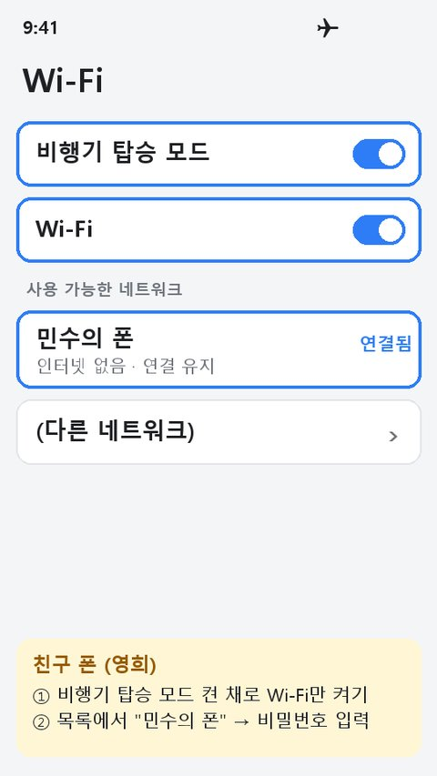
설정 그림은 이해를 돕는 예시입니다. 메뉴 이름과 위치는 폰마다 조금 다릅니다.
③ 방장: 앱에서 방 열기
- 어디나 고스톱을 열고 방 만들기를 누릅니다.
- 인원(2~5명)을 고르고, 방 이름은 그대로 두거나 바꿉니다. 방 키(숫자 4자리)는 친구들에게 알려 줄 비밀번호입니다.
- 방 열고 입장을 누르면 대기실이 열립니다. 인터넷이 없으니 "인터넷 없음 — 같은 와이파이에서만 참가할 수 있습니다"라고 나오는데, 핫스팟은 같은 와이파이이므로 정상입니다.
- 대기실에는 QR, 방 키, 방 표시(파란 글자 2개, 예: GR)가 보입니다. 친구가 방을 찾을 때 "GR 방이야"라고 말해 주면 쉽습니다.
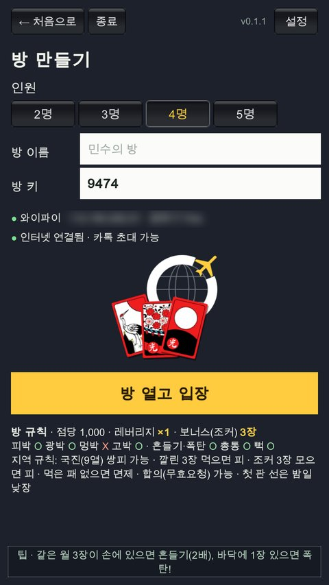
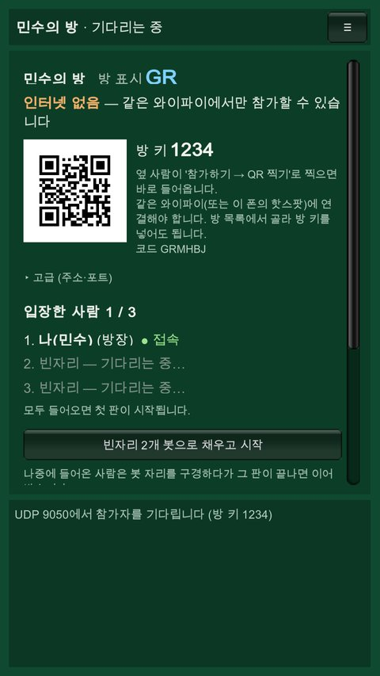
④ 친구들: 앱에서 들어가기
둘 중 편한 방법으로 들어옵니다.
- 방 목록으로: 참가하기 → "같은 와이파이의 방"에 방장 방이 뜹니다 (안 뜨면 새로 고침). 방을 누르고 방 키를 넣은 뒤 입장.
- QR로: 참가하기 → QR 찍기로 방장 화면의 QR을 찍으면 방 키 없이 바로 들어옵니다. 옆자리라면 이 방법이 가장 빠릅니다.
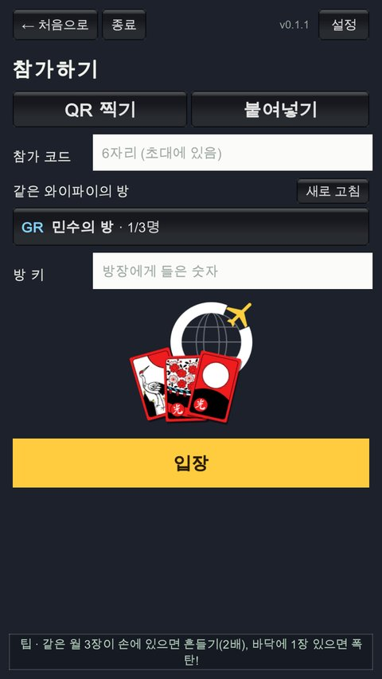
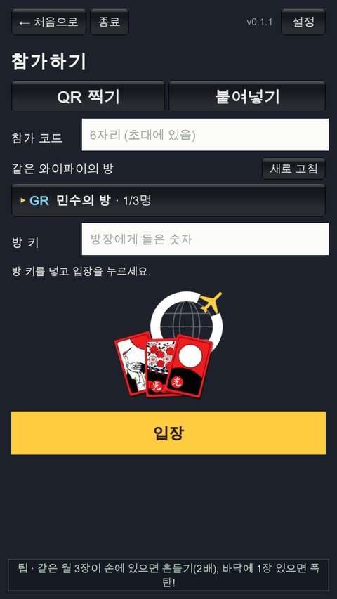
⑤ 시작
방장 대기실의 "입장한 사람"에 친구 이름과 ● 접속이 뜹니다. 인원이 다 차면 첫 판이 저절로 시작됩니다. 사람이 모자라면 방장이 빈자리 봇으로 채우고 시작을 누르세요. 늦게 온 친구는 봇 자리를 구경하다 그 판이 끝나면 이어받습니다.
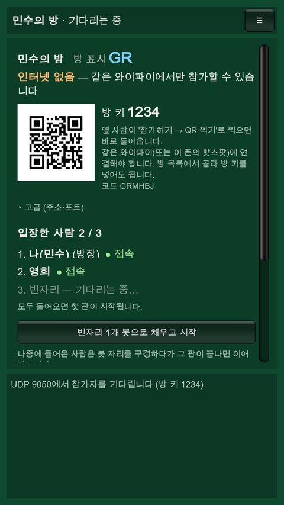
비행기에서 알아 둘 것
- 방장 폰 배터리: 핫스팟과 방을 같이 돌려 배터리를 많이 씁니다. 충전기를 꽂아 두거나 배터리가 많은 사람이 방장을 하세요.
- 방장은 앱을 끄지 마세요: 방은 방장 폰 안에 있습니다. 방장이 잠깐 다른 앱으로 가면 게임이 멈췄다가 돌아오면 이어지지만, 앱을 완전히 끄면 게임이 끝납니다. 다른 사람은 잠깐 나갔다 와도 그 사이 AI봇이 대신 둡니다.
- 소리: 기내에서는 설정에서 음성·효과음을 끄거나 이어폰을 쓰세요.
- 항공사 안내를 따르세요. 이착륙 때 전자기기 사용을 멈추라고 하면 따르고, 대부분 비행 중 비행기 모드에서의 와이파이·핫스팟(블루투스처럼 기기끼리 연결)은 허용됩니다.
- 방이 안 보이면: 친구 폰이 방장 핫스팟에 연결됨인지 먼저 확인하세요. 그래도 안 되면 QR 찍기로 들어오세요.
3. 게임 화면
- 가운데 바닥(덱을 둘러싼 패), 아래 내 손패, 각 자리의 먹은 패(광·열끗·띠·피 무더기, 장수 표시).
- 낼 수 있는(바닥에 같은 월이 있는) 손패는 노란 표시가 붙습니다. 패를 누르면 냅니다. 바닥에 같은 월이 두 장이면 먹을 패를 고릅니다.
- 이름 옆: 점수 · 잔액 · 고 · 흔들기 · 폭탄.
- AI 추천: 누르면 AI가 고른 다음 수를 알려 주고 낼 패에 파란 테두리를 그립니다. 한 번 더 누르면 그 수를 그대로 둡니다.
- ≡ 메뉴: 방 나가기, (방장) 잠시 멈춤·마지막 판 선언·그만하기, AI에게 맡기기, 사용설명서.
- 채팅: 쓴 말은 이름 밑 말풍선으로 10초 동안 보입니다.
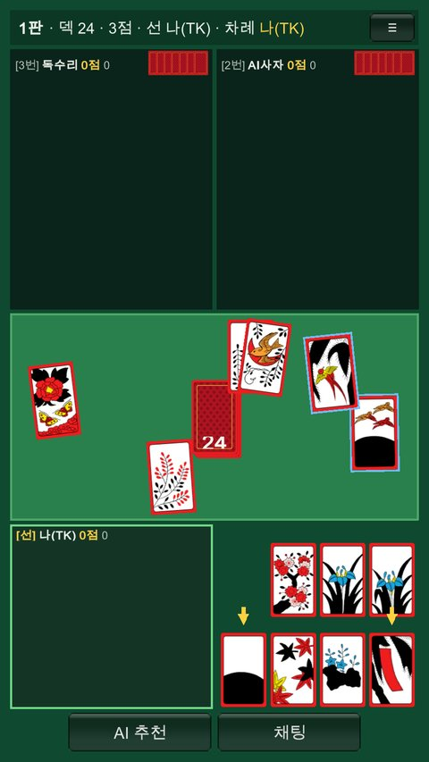
4. 규칙
| 2인 (맞고) | 3인 | 4·5인 | |
|---|---|---|---|
| 손패 / 바닥 | 10장 / 8장 | 7장 / 6장 | 3명이 7장씩 / 6장 |
| 날 점수 | 7점 | 3점 | 3점 |
- 선 정하기: 첫 판은 밤일낮장(한 장씩 뽑아 밤에는 낮은 월, 낮에는 높은 월이 선). 그다음은 지난 판 승자가 선.
- 기리: 선 바로 앞 사람이 섞은 덱을 뗍니다 (10초 안에 안 하면 저절로).
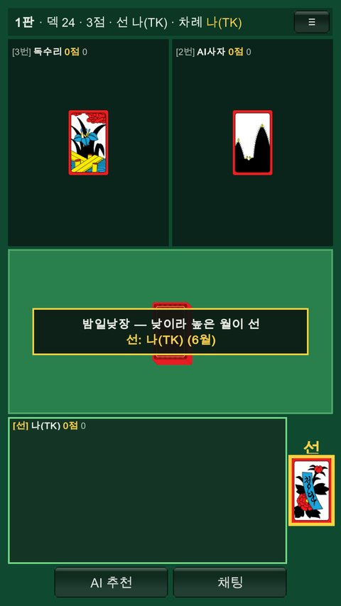
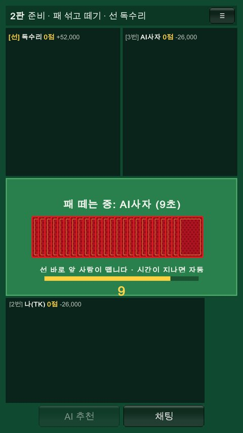
- 차례: 손패 한 장을 내고 덱에서 한 장을 뒤집습니다. 같은 월끼리 먹습니다. 바닥에 같은 월이 3장이면 다 먹습니다.
- 뻑: 낸 패와 뒤집은 패가 바닥 한 장과 같은 월이면 셋이 바닥에 남습니다. 그 뻑을 4번째 패로 먹으면 다른 사람마다 피 1장(자기 뻑이면 2장). 첫뻑·연뻑 상금(5점 값, 연속 두 번째 2배, 세 번째 4배 + 승리), 한 판에 뻑 세 번이면 승리(10점).
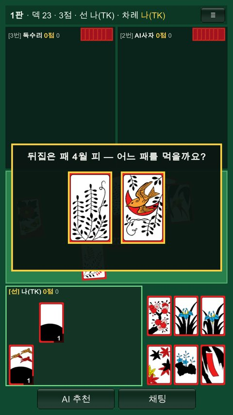
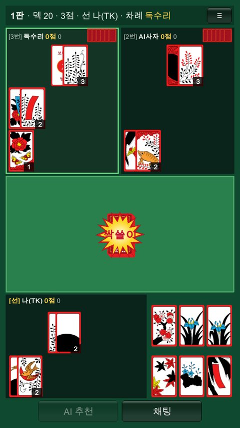
- 쪽(바닥에 없는 월을 냈는데 뒤집은 패가 같은 월), 따닥(바닥 2장과 같은 월을 내고 뒤집은 패도 같은 월), 쓸(내 차례 끝에 바닥이 빔): 다른 사람마다 피 1장.
- 흔들기: 같은 월 3장을 쥐고 바닥에 그 월이 없으면, 그 월을 낼 때 흔들 수 있습니다 (손패를 보여 줌). 흔들면 그 차례에 흔든 월의 패를 냅니다. 이기면 2배.
- 폭탄: 같은 월 3장을 쥐고 바닥에 그 월 1장이 있으면 3장을 한꺼번에 내 4장을 먹습니다. 피 1장씩 받고, 이기면 2배, 다음 두 차례는 손패 대신 뒤집기만 할 수 있습니다.
- 총통(4카): 손에 같은 월 4장이 모이면 보여 주고 상금(10점 값)을 받은 뒤 STOP 또는 GO를 고릅니다. 아래 총통(4카) 규칙을 보세요.
- 보너스 패(기본 3장, 쌍피): 손에 있으면 아무 때나 내서 먹고 덱에서 한 장을 채웁니다. 3장을 다 모으면 피 1장씩.
- 국진(9월 열끗): 열끗 또는 쌍피로 쓸 수 있습니다. 피를 뺏길 때 피가 없으면 국진을 쌍피로 줄지 묻습니다. 5월 난초 열끗도 쌍피로 쓰는 규칙은 설정에서 켭니다 (기본 끔).
- 고 / 스톱: 날 점수가 되면 고(계속) 또는 스톱(끝내고 받기). 고 할 때마다 1점씩 더하고, 3고부터 2배, 4고 4배, 5고 8배… 고 한 뒤에는 점수가 더 나야 다시 고·스톱을 고릅니다.
- 합의(무효요청): 3명이 치는 판에서 내가 어느 패를 내도 상대 중 한 사람이 바로 나게 되면, 손패를 보여 주고 무효를 청할 수 있습니다. 모두 합의하면 무효(다음 판 2배), 한 사람만 거절하고 그 사람이 지면 진 사람 몫을 혼자 냅니다.
- 무효: 아무도 못 나고 덱이 떨어지면 무효, 다음 판은 2배 (이어지면 4배, 8배 …).
총통(4카) 규칙 — STOP / GO
손에 같은 월 4장(예: 9월 4장)이 모이면 총통입니다. 손패를 보여 주고 상금(10점 값)을 받습니다. 상금은 STOP이든 GO든 먼저 받고 돌려주지 않습니다.
| 언제 | 상금 내는 사람 | 그다음 |
|---|---|---|
| ① 처음 받은 패에 4장 | 전원 | STOP 또는 GO를 고릅니다 |
| ② 게임 중 보너스 패를 내고 가져온 패로 4장이 됨 | 치는 사람만 (4·5인에서 쉬는 사람은 안 냄) | 바로 보여 주고 STOP 또는 GO |
| ③ 4·5인: 처음 받은 패에 4장인데 쉬거나 광을 팔게 됨 | 전원 | 보여 주고 판이 바로 끝납니다 (STOP과 같음) |
| STOP | 상금을 받고 판이 끝납니다. 총통을 낸 사람이 다음 판 선이 됩니다. |
|---|---|
| GO | 상금을 받고 계속 칩니다. 두 번 흔든 것으로 쳐서, 그 판을 이기면 4배를 받습니다. 지면 보통처럼 진 값만 냅니다 (받은 상금은 그대로). 4장은 손에 남으니, 한 장을 먼저 내고 나중에 바닥의 그 패에 나머지 석 장으로 폭탄을 칠 수도 있습니다 (폭탄 2배는 따로). |
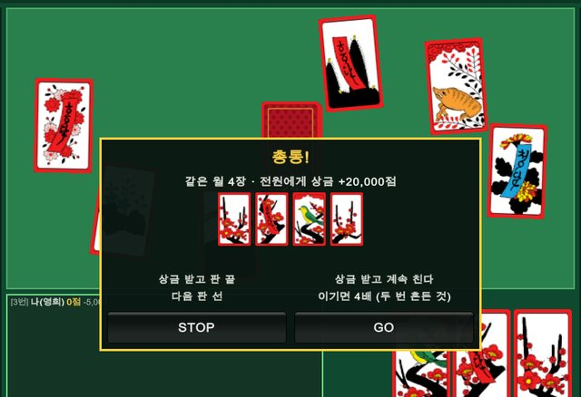
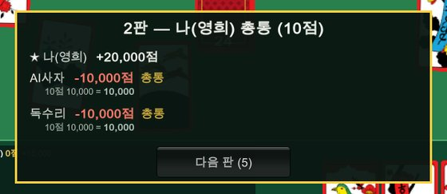
예 — 3인, 점당 1,000, 처음 받은 패에 9월 4장: 두 사람에게서 10,000씩 20,000을 받고,
STOP → 판 끝, 다음 판 선. GO → 계속 쳐서 5점으로 이기면 5점 5,000 × 총통 GO 4 = 20,000씩 더 받고, 지면 진 값만 냅니다.
고를 시간이 지나면 STOP으로 정해집니다. 총통은 설정에서 끌 수 있습니다.
5. 점수
| 광 | 3광 3점 (비광이 끼면 2점) · 4광 4점 · 5광 15점 |
|---|---|
| 열끗 | 5장 1점, 한 장마다 +1. 고도리(2·4·8월 새) 5점 |
| 띠 | 5장 1점, 한 장마다 +1. 홍단·청단·초단 각 3점 |
| 피 | 10장 1점, 한 장마다 +1 (쌍피 2장, 삼피 3장으로 셈) |
| 고 | 고 한 번마다 +1점 |
6. 정산 · 박
낼 돈 = 점수 값 × 배수 × 레버리지. 점수 값은 설정의 금액 방식(기본 점당 1,000)입니다. 판 결과에는 진 사람마다 내역이 나옵니다. 예: 5점 5,000 × 3고 2 × 흔들기 2 × 피박 2 = 40,000
| 배수 (모두) | 3고부터 2·4·8배 · 흔들기·폭탄 2배씩 · 총통 GO 4배 · 무효 다음 판 2배 · 멍박(열끗 7장 이상, 기본 끔) 2배 |
|---|---|
| 피박 | 이긴 사람이 피로 점수를 냈고 진 사람의 피가 1장 이상 5장 이하(맞고 7장 이하)면 그 사람만 2배. 피가 한 장도 없으면 피박이 아닙니다. 정하지 않은 국진(난초)은 진 사람에게 유리한 쪽으로 셉니다. |
| 광박 | 이긴 사람이 광으로 점수를 냈고 진 사람이 광이 하나도 없으면 그 사람만 2배 |
| 고박 | 고 한 사람이 있는데 다른 사람이 나면, 고 한 사람이 진 사람들 몫을 모두 냅니다 (3인 이상) |
| 면제 | 판이 끝날 때 먹은 패가 한 장도 없는 사람은 내지 않습니다 |
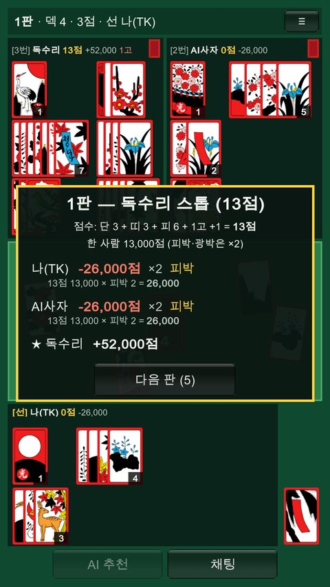
박은 진 사람이 모두 해당하면 바닥 가운데에, 일부만이면 그 사람 먹은 패 위에 크게 표시됩니다.
7. 4·5인 (고/쉬기 · 광 팔기)
- 패를 나눈 뒤 선 다음 사람부터 차례로 고(친다) 또는 쉬기를 정합니다. 선은 무조건 고, 앞판에 쉬었으면 이번엔 무조건 고입니다.
- 고가 3명 차면 나머지는 쉬고, 자리가 없어 쉬게 된 사람은 광을 팝니다. 광 팔기 값: 광 1장(보너스 패 포함) 1점, 오광 +10, 8월 새 1점(고도리면 5점), 청단·홍단 3점, 쌍피 1점, 같은 월 3장이면 흔들고 팔아 2배.
- 광값은 기본 선불(선을 뺀 두 사람이 냄)이고, 판 광 점수만큼 이긴 사람 점수에도 더합니다. 스스로 쉰 사람(죽기)은 광을 팔지 않습니다.
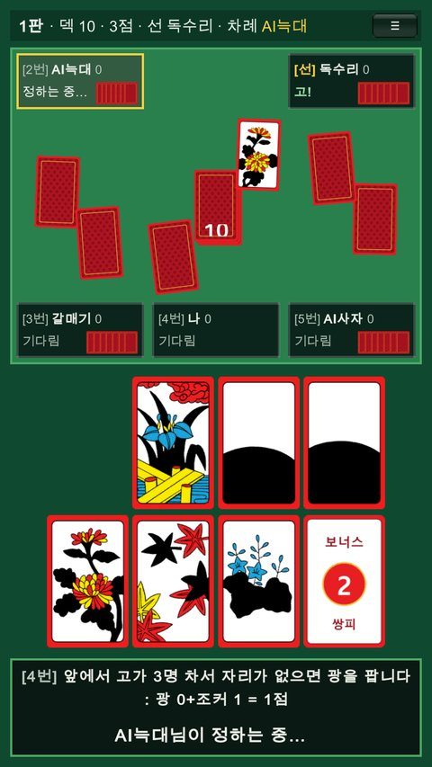
8. AI
- AI봇: 수십만 판을 스스로 두며 배운 인공지능입니다. 이름이 AI사자·AI표범·AI늑대·AI상어로 나옵니다.
- AI 추천·AI에게 맡기기: 기본 AI, 또는 [AI 학습하기]에서 만든 내 AI가 둡니다. 맡기는 동안 내 이름 옆에 (AI)가 붙고, 판 속도는 내가 쉬는 판처럼 천천히 갑니다.
- AI 학습하기 (처음 화면): AI · 설정 · 기록 탭.
- 나를 닮은 AI: 내가 직접 둔 수로 학습 (판 나눠 배우기 · 이긴 판만 · 모든 판).
- 더 강한 AI: 혼자 하기·내가 연 방의 모든 자리 기록(이름 없이 사람·AI·봇만)에서 그 판 승자의 수를 따라 하고, 가장 많이 잃은 자리의 실수는 피합니다.
- 천천히 배웁니다: 수십만 판을 배운 기본 AI를 내 기록 몇천 수로 뒤집지 않도록, 내 AI는 기본 AI의 생각을 반쯤 섞어 조금씩 배우고 기본 AI에서 멀리 벗어나지 않습니다. 그래서 한 번 학습으로는 많이 바뀌지 않지만 실력은 지키고(평점이 기본 AI 아래로 잘 안 떨어짐), 이어서 학습할 때마다 조금씩 더 닮아 갑니다.
- 학습이 끝나면 바로 평점(AI+봇 상대 100판, 기본 AI = 1500)을 재고, 있던 AI보다 낮으면 저장하지 않습니다. 아니면 저장할지 묻습니다.
- 이어서 학습: 저장된 AI에서 시작해 새로 둔 판만 더 배웁니다 (설정 탭에서 "처음부터"로 바꿀 수 있음).
- 평점이 기본 AI보다 높으면 기여하기로 기록을 이름 없이 보내 다음 기본 AI를 키우는 데 보탤 수 있습니다. 기록 주고받기로 친구 기록을 받아 더 강한 AI 학습에 쓸 수도 있습니다.
- 순위표: 처음 화면 버튼 아래 AI 랭킹 1~5위와 내 순위, 성적 화면에 이번 달·분기 상금 랭킹 1~10위. 설정에서 순위표 참여를 끌 수 있습니다 (끄면 이름이 "익명").
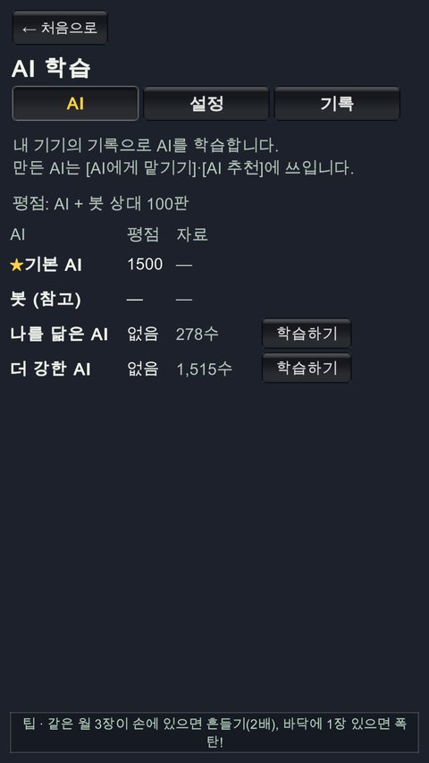
9. 설정
- 레버리지(×1·2·3·5·10) · 금액 방식(점당 1,000 / 3·4점 1,000 / 3·4점 2,000) · 판 수
- 봇 속도(혼자 하기 · 방 만들기 따로) · 봇 실력(혼합 · 보통 · AI봇)
- 보너스 패 장수·삼피 · 피박 · 광박 · 멍박 · 고박 · 흔들기·폭탄 · 총통 · 뻑 · 국진·난초 쌍피 · 비고도리 · 면제 · 합의 · 밤일낮장 등
- 턴 시간 · 소리(음성·효과음) · AI 학습용 기록 켬/끔 · 순위표 참여
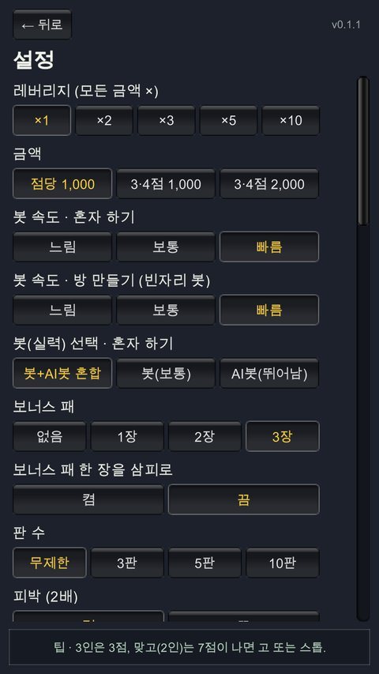
10. 자주 묻는 질문
같은 와이파이인데 방 목록에 방이 안 보여요
방장과 같은 공유기인지 확인하세요. 와이파이 이름이 두 개(통신사 모뎀, 공유기)면 다른 네트워크일 수 있습니다. 그래도 안 보이면 참가 코드로 들어오세요.
카톡 링크를 눌렀는데 앱이 안 열려요
앱을 먼저 설치하세요. 그래도 안 되면 링크 페이지의 참가 코드를 복사해 '참가하기 → 붙여넣기'.
방장 폰이 꺼졌어요
방은 방장 폰 안에 있어서 방장 앱이 꺼지면 게임이 끝납니다. 다른 사람 화면에는 지금까지의 성적표가 나오고, 이 기록도 성적 보기에 남습니다.
내 차례 시간이 지나면요?
턴 시간을 정해 두었으면, 기본 시간이 지난 뒤 30초 카운트다운이 나오고 그래도 안 두면 방이 힌트대로 대신 둡니다.
문의

만든 곳 Odina Studio (anywhere · 어디나) · taekan66@gmail.com · 개인정보처리방침